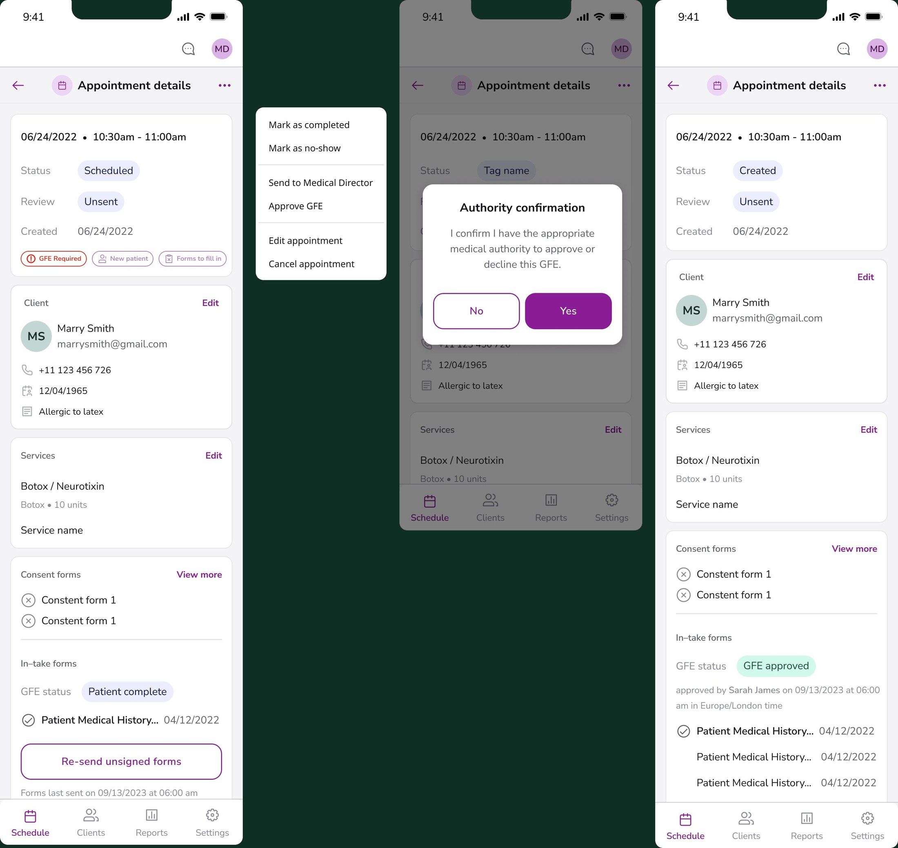
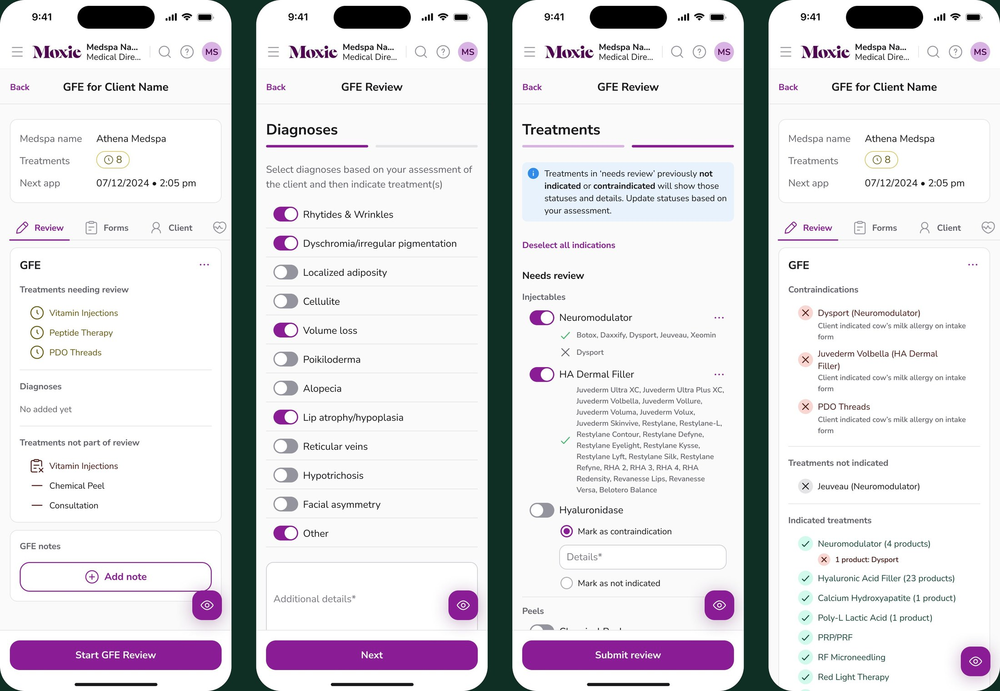
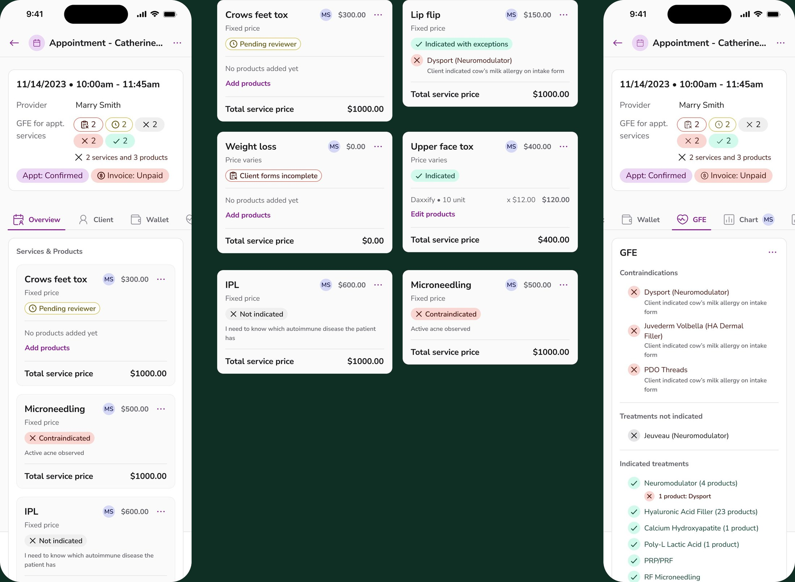

Rebuilding the Good Faith Exam from one tap into structured, defensible review.
A binary verdict where clinical judgment belonged.
The old flow was barely a flow at all. A client filled out a medical history form, and the reviewer read it and tapped a single Approve or Decline button for the entire appointment. No services, no contraindications, no diagnoses, just a binary verdict that was, in practice, deeply non-compliant.
That one tap also only covered the services a client had already booked. The moment a provider wanted to upsell or switch a treatment once the client was in the chair, nothing had cleared it, so they either treated outside the GFE or sent the client home for another review.
And a single approve/decline can't capture what a client is actually being cleared for. A service like "Full Face Rejuvenation" might mean neuromodulator + HA filler + Sculptra, or IPL + Neogen + Fraxel + RF microneedling. Reviewers, often working remotely, had no way to know which.

Start a layer beneath the screen.
The real problem wasn't the button. It was that the system had no model of what a service was. So I started there: a vague marketing name like "Full Face Rejuvenation" had to resolve into the specific service types and products a reviewer is actually signing off on.
- Resolve every bookable service down to its underlying service types and products, so review happens against real clinical inputs, not a marketing name.
- Review the client against the practice's full menu of service types, not just the booked services, so a cleared type covers any service that draws on it.
- Surface contraindications from the intake against those specific products, not a generic flag on the whole visit.
- Capture a per-service decision with the reviewer's reasoning, creating a defensible record instead of a tap.

Compliance the team could stand behind.
The rebuilt exam gave reviewers the context to make and document a real clinical decision, turning a liability into a defensible, structured record. And because the review now covered the practice's full set of service types, the results could surface to the provider at the moment of treatment, every service marked indicated, not indicated, or contraindicated, so they could confidently treat, add, or switch services in the appointment without ever falling outside the GFE. It also became the data backbone other parts of the product could build on, because the system finally understood what every appointment contained.
